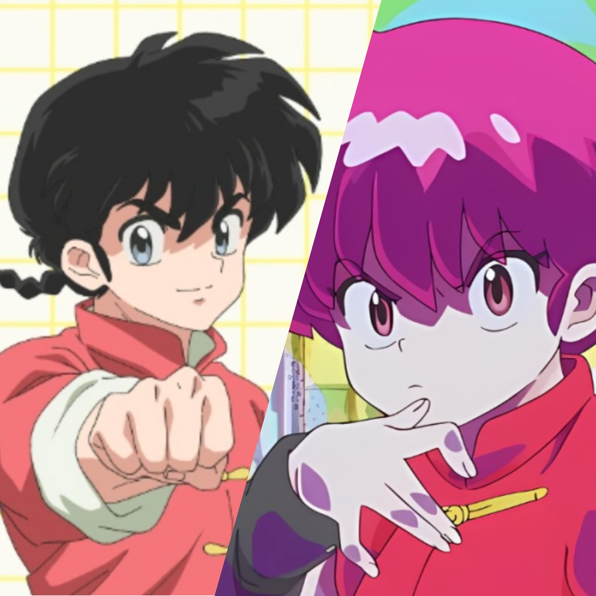

Personajes
Ranma Saotome
El protagonista que cambia entre chico y chica.
Akane Tendo

La prometida de Ranma, conocida por su fuerte carácter.
Ryoga Hibiki

Rival de Ranma y su eterno "extraviado".
Nabiki Tendo

Es la mediana de las 3 hermanas Tendo.
Kasumi Tendo

Hermana mayor de Akane Tendo.
Genma Saotome

Padre de Ranma Saotome, al tocar agua fria cambia a panda.
Productos Oficiales
-
 Blu-ray Edición Especial
Blu-ray Edición Especial
-
 Figuras Coleccionables
Figuras Coleccionables
-
 Ropa y Accesorios
Ropa y Accesorios
Acerca del Anime
Ranma 1/2 es un clásico de los 90, creado por Rumiko Takahashi. Este remake trae nuevos colores, animaciones mejoradas y toda la comedia que amamos.